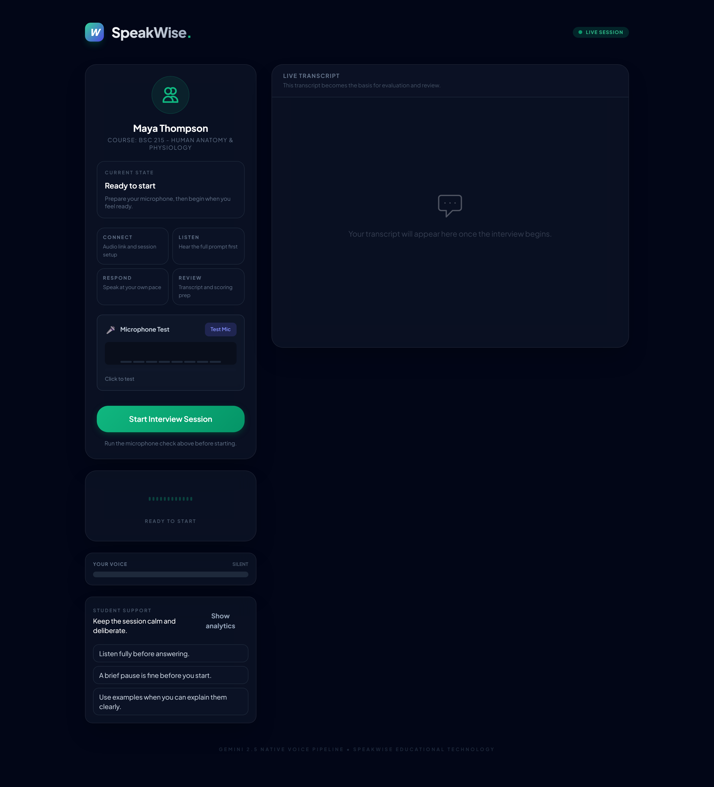
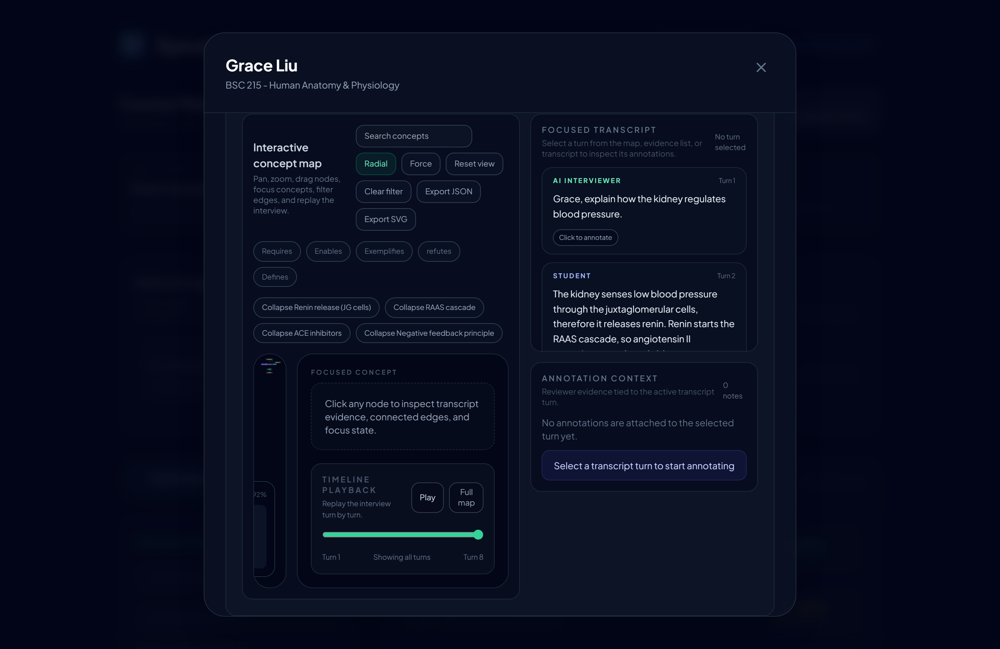
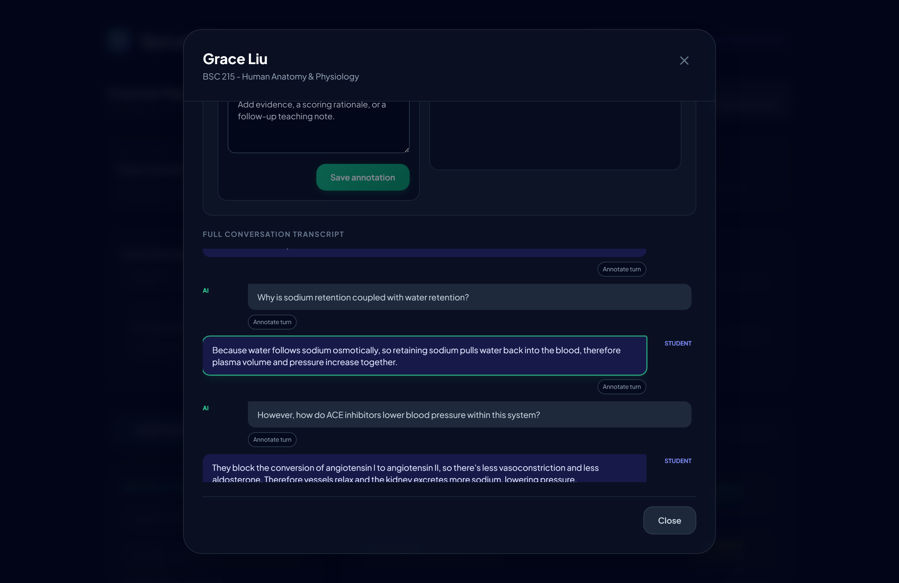
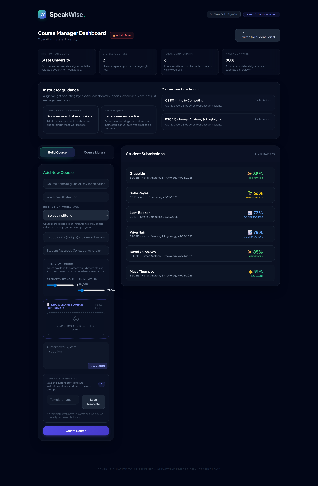
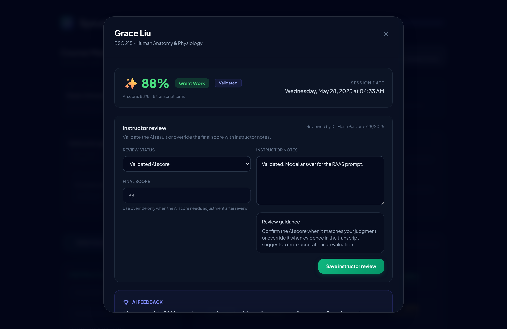
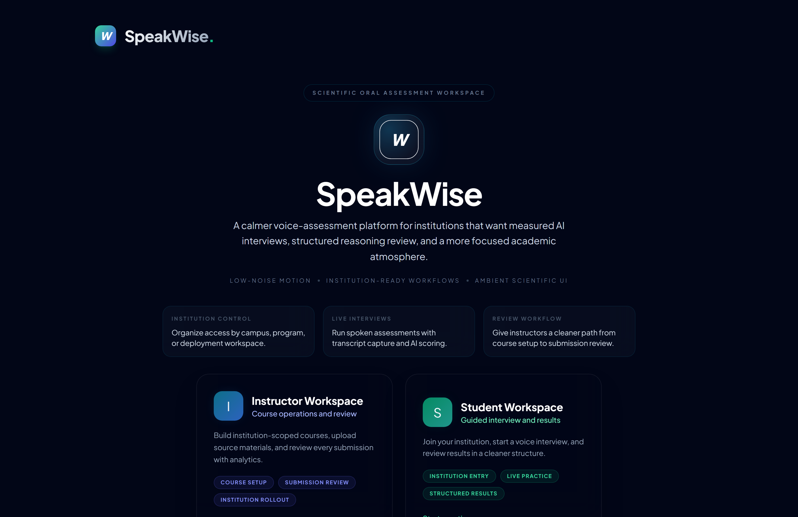
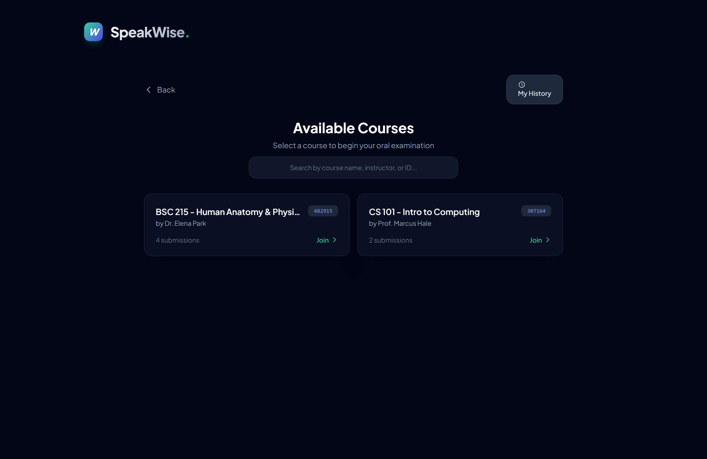
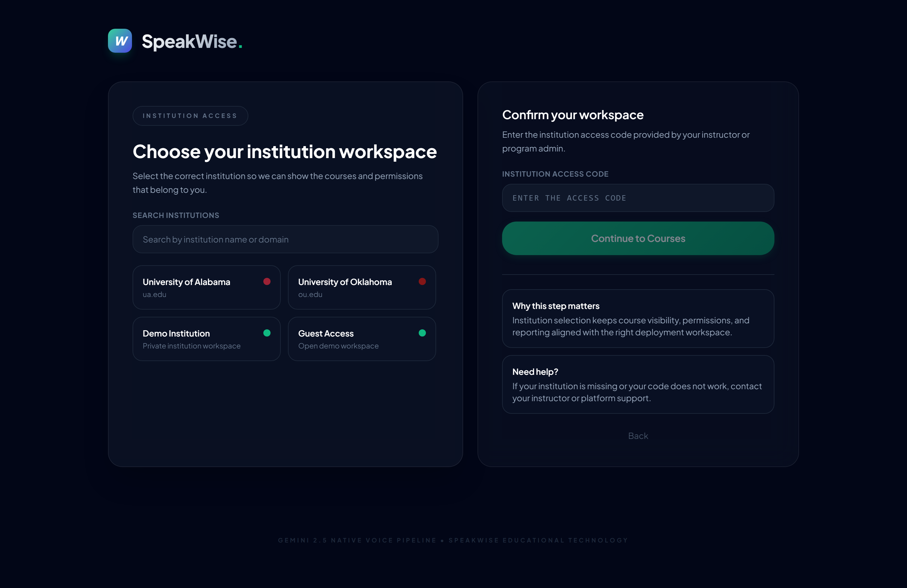
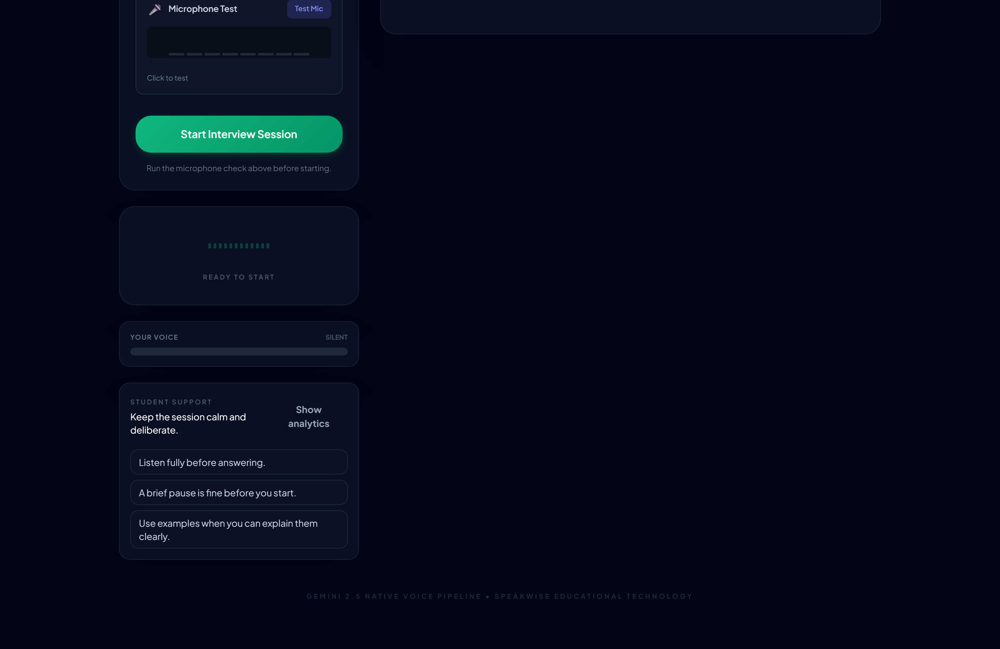
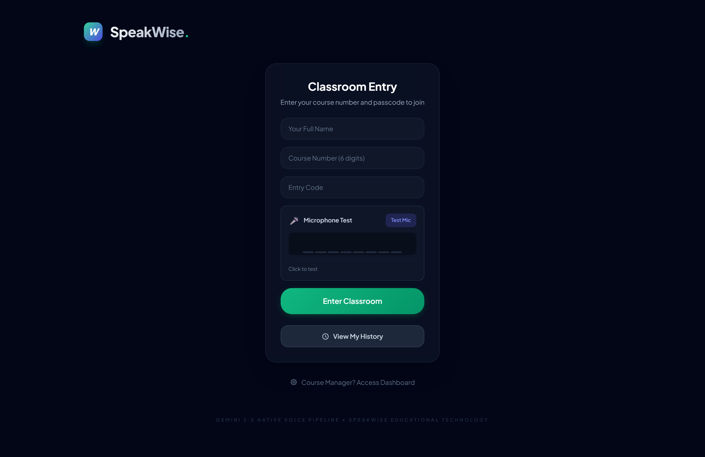

SpeakWise: capturing real-time reasoning evidence traces through AI-mediated oral assessment
Generative AI blurs the line between a learner's own reasoning and AI-assisted production. SpeakWise reframes the oral exam as a process-oriented measurement environment: students reason aloud with an adaptive AI examiner, and the platform captures discourse, dialogic, and temporal signals as analyzable evidence — then hands it to instructors who stay in control of the judgment.
Oral reasoning, made into evidence
Oral assessment forces real-time articulation that is hard to outsource to AI (Fenton, 2025) — which makes it newly attractive for validity in the generative-AI era. But conventional oral exams do not scale, and they do not capture reasoning as something an instructor or researcher can later inspect. SpeakWise is a research-informed intervention grounded in Evidence-Centered Design (Mislevy, Almond & Lukas, 2003) and assessment design & validation (NRC, 2014), reframing oral assessment as a process-oriented measurement environment (cf. Zapata-Rivera et al., 2024).
GenAI blurs whose reasoning is being assessed, threatening assessment validity for open-ended tasks. Oral exams resist that, but don't scale and leave no analyzable trace.
An ECD-aligned platform where an AI examiner runs adaptive oral dialogue, and reasoning-relevant signals are captured, structured, and made explainable.
Automated scores are provisional summaries, not verdicts (Alfredo et al., 2024). The instructor sees how a score was generated and can override it.
Three questions, one design study
SpeakWise is a work-in-progress design-based research project, synthesizing interaction-log analysis, automated discourse-pattern detection, and instructor sensemaking interviews across multiple disciplinary domains.
What reasoning evidence traces emerge during AI-mediated oral assessment, and how do they vary across learners and tasks?
How do dialogic and temporal patterns shape instructors' interpretation of student reasoning?
How do instructors use evidence traces and AI confidence in their evaluative judgments?
A four-stage, ECD-aligned pipeline
Learners engage in adaptive oral dialogues with an AI examiner that uses Socratic questioning and tiered scaffolding (Vygotsky's ZPD). Each stage maps an ECD layer — from evidence elicitation to instructor decision.
Student ⇄ AI examiner over voice; turn-taking detection; multi-tier hints keep momentum without giving away answers.
→Discourse, dialogic, temporal, and structural signals are logged from the live transcript as process data.
→A Toulmin-aligned 4-dimension rubric, an argument graph, and an LLM↔pattern score-agreement check with confidence calibration.
→A dashboard surfaces confidence-coded results and evidence-linked overrides — the human makes the call.

Reasoning evidence traces
The central construct: SpeakWise surfaces multiple forms of reasoning-relevant evidence embedded in the interaction itself (He & Cui, 2025), rather than collapsing a performance into one holistic number.
Causal & justification markers — "because", "therefore", "this leads to".
Challenges, abstraction, and generalization across cases.
Turn initiation, rephrasing, and how the learner steers the exchange.
Response-latency variation as a proxy for cognitive load & fluency.


Instructor sensemaking, not automation
The instructor surface preserves agency by showing not only the score, but how it was generated. Every submission is explicitly flagged (or not) for review, with reasons, surfaced at the top of the dashboard.
- Confidence-coded feed — green / yellow / red mastery across submissions
- Attention flags — courses & students needing first review
- Evidence drill-down — argument graph + 4-dimension reasoning rubric per student
- Transcript-linked annotations tied to specific reasoning turns
- Score override with instructor notes & an audit trail
- Mean / median / SD with a small-n caveat
- Score distribution across the cohort
- CSV / JSON export stamped with analysis / prompt / model version for reproducibility
- Reusable course templates for repeatable institution rollout
- Institution-scoped access (Supabase Auth + Row Level Security)


Current design architecture
SpeakWise is a React 19 + TypeScript + Vite single-page app on Cloudflare Pages, with Supabase for auth and institution-scoped data, and a thin Pages worker that keeps every model key server-side. The voice examiner runs on Google Gemini Live; transcription and scoring route through OpenRouter.
API keys for model calls never ship in the client bundle: the Pages worker proxies OpenRouter and mints ephemeral Gemini Live tokens server-side. Row Level Security enforces institution isolation — an anonymous client reads nothing; a signed-in user sees only their own institution's courses, submissions, and history.
React 19 · TypeScript 5.8 · Vite · D3 for the argument map
Supabase Auth + Postgres + Row Level Security + SECURITY DEFINER RPCs
Gemini Live (voice) · OpenRouter (gpt-4o-audio transcription, Gemini scoring)
type-check · ESLint 9 · Vitest · Vite build · Playwright smoke — all on CI
How it works, end to end
The student journey
Sign in → choose an institution workspace → enter a course → complete a guided oral interview → review score, feedback, reasoning evidence, and the concept map. The interface is built calm before clever: it lowers anxiety before it shows intelligence.
Clip 1. Student journey — sign-in, course selection, and the pre-interview mic check through to results.
The instructor journey
Create institution-scoped courses → generate or edit AI interview prompts → save reusable templates → review submissions, annotate transcripts, and override scores with an audit trail. Administrators manage roles, institution coverage, and audit activity.
Clip 2. Instructor journey — from the confidence-coded dashboard into an evidence-linked review and override.
Narrated tutorials
Recorded as Playwright screencasts with ElevenLabs narration and an on-screen guiding cursor. Full versions are embedded in the walkthrough guide.
Student tutorial — completing an oral interview, start to finish.
Instructor tutorial — reviewing reasoning evidence and overriding a score.
Concept / argument map — relation filters, Toulmin colour mode, and timeline playback of how the argument was built.
Inside the platform





Theoretical framework
Design decisions are tied to established learning-sciences and measurement theory, so each interface behavior traces back to a claim the platform is trying to support.
| Theory | Application in SpeakWise |
|---|---|
| Evidence-Centered Design | Assessment goal → evidence model → task model; reasoning traces are the evidence layer. |
| Bloom's Taxonomy (rev.) | Question design escalates remember → understand → apply → analyze. |
| Socratic dialogue | The AI examiner generates exploratory follow-ups grounded in the learner's own response. |
| Cognitive Load Theory | Response latency (wait time) is logged as a proxy for cognitive load. |
| Vygotsky's ZPD | Multi-tier hint system implements scaffolding without giving away the answer. |
| Metacognition | A post-interview reflection step closes the loop on the student side. |
| Human-centred LA | Scores are provisional; the instructor surface is built for interpretation & override. |
Preliminary feedback & refinement
Early formative feedback came from four graduate reviewers in library & information science, who each completed a SpeakWise oral-assessment session and wrote an open-ended reflection, framing the tool for informal learning (libraries, museums, makerspaces). We thematically synthesized their reflections into validated strengths, friction points, and a prioritized refinement plan that feeds the next design-based research iteration. The sample is small and self-selected, but the signals converge.
- Immediacy — a response right after speaking, "no waiting around"
- Real-time articulation — "think on your feet", no over-editing
- Conversational feel — "closer to a real conversation or a reference interview"
- Low-pressure practice — confidence building for interviews / speaking
- Fits as a supplement to human, people-centered assessment
- Speech recognition sometimes missed responses (most severe)
- Session-start scroll bug obscured the prompt area
- No prompt preview; pace too fast; one-shot pressure
- Opaque scoring felt "judged, not supported" — lowered trust
- Speaking anxiety & accessibility; doubt that nuance is read like a human would
- Overreliance — confident output can be over-trusted
Refinement plan — next DBR iteration
| Priority | Reviewer signal | Planned refinement | Design / ECD anchor |
|---|---|---|---|
| P0 · Reliability | ASR misses speech; UI auto-scrolls; one-shot pressure | Harden speech capture + type-to-respond fallback; fix the scroll bug; allow retry/redo on a question. | Trustworthy evidence capture |
| P0 · Calm by design | Pace too fast; anxiety; no prompt preview | Low-pressure Practice mode vs. graded mode; prompt preview; learner-controlled pacing. | Calm before clever |
| P1 · Transparency | Opaque scoring feels like judgment | Student-facing "what this is looking for" rubric preview + explainable post-session breakdown. | Evidence over mystery |
| P1 · Adaptivity | Wants the AI to dig deeper or redirect | Strengthen Socratic adaptive follow-ups for interesting / off-track responses. | Tiered scaffolding (ZPD) |
| P1 · Reflection | Wants to review what was said | Post-session reflective replay of captured reasoning turns alongside feedback. | Metacognition step |
| P2 · Accessibility | Single voice; different communication styles | Multiple voices / accents; alternative input modes. | Inclusive assessment |
| P2 · Framing | Risk of overreliance on confident output | Position as a supplement; surface AI confidence so low-confidence scores invite human review. | Human-in-the-loop · calibration |
These refinements operationalize calm before clever and evidence over mystery on the student-facing surface — where the prototype is weakest — and sharpen RQ2 (dialogic / temporal interpretation) and RQ3 (how evidence traces & AI confidence shape judgment).
Contribution & next steps
Reasoning evidence traces as a new measurement target for oral assessment, beyond a single holistic score.
Real-time capture & fusion of discourse, dialogic, and temporal signals into an analyzable argument structure.
An institution-ready, explainable, human-in-the-loop assessment environment that keeps instructors in control.
In-the-wild deployment across UA / OU courses · inter-rater reliability of the reasoning rubric · AI-confidence calibration against instructor judgments.
Scan to open this page — full workflow, architecture, and demo videos — at educatian.github.io/speakwise. The same QR appears on the ICOLSEI 2026 poster.
References & links
- Alfredo, R., et al. (2024). Human-centred learning analytics and AI in education. Computers & Education: Artificial Intelligence, 6, 100215.
- Fenton, A. (2025). Reconsidering the use of oral exams and assessments. Educational Researcher, 54(7), 430–436.
- He, S., & Cui, Y. (2025). A systematic review of log-based process data in computer-based assessments. Computers & Education, 105245.
- Mislevy, R. J., Almond, R. G., & Lukas, J. F. (2003). A brief introduction to evidence-centered design. ETS Research Report, 2003(1).
- National Research Council. (2014). Developing Assessments for the Next Generation Science Standards. National Academies Press.
- Zapata-Rivera, D., et al. (2024). Designing ECD-based conversations for assessment with LLMs. EDM 2024 Workshop.